Synchronizace a meziprocesová komunikace¶
Tato kapitola pokrývá dvě úzce propojená témata. Nejprve si vysvětlíme, proč souběžné programy potřebují synchronizaci a jaké nástroje máme k dispozici — od hardwarových instrukcí přes zámky a podmíněné proměnné až po semafory a bariéry. Poté si ukážeme, jak tyto nástroje použít při řešení tří klasických synchronizačních úloh: večeřících filosofů, čtenářů a písařů a spících holičů. Na těchto modelových příkladech uvidíme, jakých chyb se lze dopustit a jak vypadají správná, optimální a spravedlivá řešení.
Obsah stránky
Problémy paralelního výpočtu¶
Jakmile více vláken sdílí data nebo prostředky, mohou nastat tři kategorie problémů. Je důležité je od sebe odlišit, protože mají různé příčiny i léky.
Časově závislé chyby (race conditions) vznikají tehdy, kdy nepoužijeme žádnou synchronizaci. Více vláken čte a zapisuje do sdílené paměti, a výsledek závisí na tom, v jakém pořadí jsou instrukce prokládány — tedy na rychlosti vláken. Výsledek je nedeterministický a obtížně reprodukovatelný.
Jakmile synchronizaci přidáme, hrozí nové problémy:
- Uváznutí (deadlock) — skupina vláken čeká na události, které může vyvolat pouze jedno z čekajících vláken. Žádné vlákno nepokročí, systém zamrzne.
- Livelock — vlákna nejsou zablokována, ale neustále mění svůj stav v reakci na ostatní a přitom žádné nedokončí výpočet. Je to jako dva lidé v chodbě, kteří si neustále uhýbají na stejnou stranu.
- Hladovění (starvation) — vlákno je ve stavu „Ready" (připraveno), ale je opakovaně předbíháno ostatními vlákny a po dlouhou dobu nezíská přístup k prostředkům.
Synchronizace neřeší vše automaticky
Špatně navrženou synchronizaci lze dostat do deadlocku nebo livelocku stejně snadno jako kód bez synchronizace. Každé řešení je nutné analyzovat z hlediska všech tří výše uvedených problémů.
Přehled synchronizačních nástrojů¶
Synchronizační mechanismy existují na různých úrovních systému. Přehled ukazuje, jak jsou vrstveny:
| Úroveň | Příklady |
|---|---|
| Hardware | SPARC v9: cas, ldstub, swap; x86-64: xchg, cmpxchg |
| Jádro OS | Linux: atomic operations, spin locks, reader-writer locks; Solaris: adaptive locks; Windows: executive dispatcher objects |
| Aplikace (Unix/POSIX) | pipes, signály, System V semafory, fronty zpráv |
| Aplikace (vlákna) | POSIX Threads: mutexy, condition variables, semafory; C++11: std::mutex, std::condition_variable |
Tato kapitola se zaměřuje především na úroveň aplikací a vláken, protože tam synchronizaci řeší programátor nejčastěji.
Synchronizační problém: Kritická sekce¶
Kritická sekce (critical region/section) je část kódu, ve které vlákno přistupuje ke sdílenému prostředku. Základní požadavek je prostý: v jednom okamžiku smí být uvnitř kritické sekce nejvýše jedno vlákno. Ostatní vlákna, která chtějí vstoupit, musí počkat.
Čekání lze realizovat dvěma základními způsoby:
- Aktivní čekání (busy waiting, spinning) — vlákno ve smyčce opakovaně testuje podmínku vstupu a spotřebovává procesorový čas.
- Blokující systémová volání / knihovní funkce — vlákno se přepne do stavu „Blocked" a procesor je přidělen jiným vláknům; vlákno je probuzeno, až se sekce uvolní.
Aktivní čekání¶
Při aktivním čekání se používá sdílená proměnná (tzv. zámek), která indikuje, zda je kritická sekce volná nebo obsazená. Před vstupem vlákno testuje hodnotu proměnné; pokud je sekce zamčena, čeká ve smyčce. Jakmile se sekce uvolní, vlákno ji zamkne a vstoupí. Po opuštění sekce zámek odemkne.
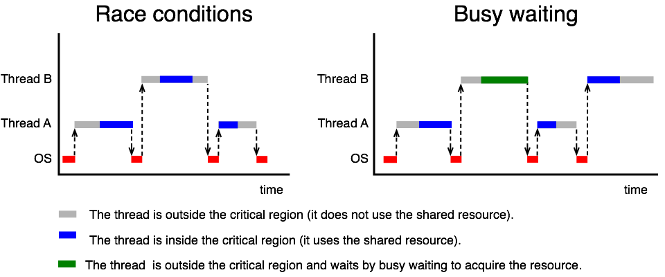
Proč nestačí obyčejná proměnná lock¶
Intuitivní implementace pomocí proměnné lock vypadá takto:
int lock = 0; /* 0 = odemčeno, 1 = zamčeno */
void thread_A(void) {
while (TRUE) {
while (lock == 1); /* busy wait */
lock = 1; /* zamkni */
critical_region_A();
lock = 0; /* odemkni */
}
}
Tento kód je chybný. Problém je v tom, že test (while (lock == 1)) a nastavení (lock = 1) jsou dvě oddělené operace, mezi které může být vložen přepínač kontextu. Představme si, že obě vlákna otestují lock == 0 před tím, než kterékoli z nich nastaví lock = 1 — obě pak vstoupí do kritické sekce současně.
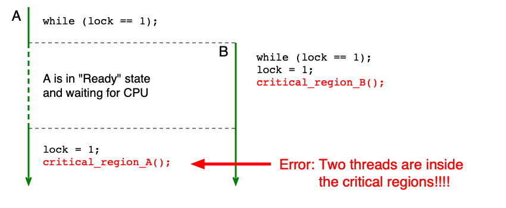
Instrukce TSL (Test-and-Set-Lock)¶
Řešení spočívá v tom, aby test a nastavení proběhly atomicky — jako jedna nedělitelná instrukce. K tomu slouží hypotetická instrukce TSL (test-and-set-lock), která:
- Načte obsah slova z dané adresy v paměti do registru.
- Nastaví obsah slova v paměti na nenulovou hodnotu (zamkne sekci).
Oba kroky probíhají atomicky — žádné jiné vlákno nemůže k danému slovu přistoupit v průběhu instrukce. Implementace závisí na hardwarové architektuře (např. zamčení paměťové sběrnice).
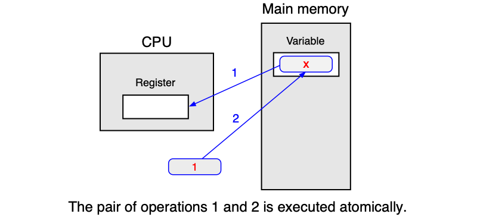
Průchod kritickou sekcí pomocí TSL v assembleru:
enter_region:
tsl REGISTER, LOCK ; zkopíruj lock do registru a nastav lock na 1
cmp REGISTER, #0 ; byl lock nula?
jne enter_region ; pokud ne, lock byl nastaven, čekej
ret ; vstup do kritické sekce
leave_region:
store LOCK, #0 ; nastav lock na 0
ret ; návrat z kritické sekce
Reálné ISA neobsahují přímo instrukci TSL, ale nabízejí ekvivalenty:
| Architektura | Instrukce |
|---|---|
| SPARC v9 | ldstub, cas, swap |
| x86-64 | xchg, cmpxchg |
| RISC-V | amoswap, amoadd; nebo pár lr/sc (Load-Reserved/Store-Conditional) |
Vlastnosti aktivního čekání¶
Výhody: - Minimální režie, pokud vlákno nemusí čekat nebo čeká jen velmi krátce.
Nevýhody: - Čekající vlákno zatíží jedno jádro CPU na 100 % po celou dobu čekání. - V jistých situacích může dojít k uváznutí — viz inverzní prioritní problém.
Inverzní prioritní problém (Priority Inversion)¶
Problém nastane za těchto podmínek:
- OS používá prioritní plánování s fixní prioritou.
- CPU má omezený počet jader.
- Vlákno A (nízká priorita) se nachází v kritické sekci.
- Vlákno B (vyšší priorita) aktivně čeká na vstup do kritické sekce.
- Všechna jádra jsou obsazena vlákny s vyšší prioritou než A.
V tomto scénáři vlákno B svým aktivním čekáním obsadí jádro a zároveň díky vyšší prioritě vytlačí vlákno A z procesoru — vlákno A tedy nemůže dokončit práci v kritické sekci a odemknout ji. Systém uvázne, přestože žádné vlákno nevolá blokující funkci.
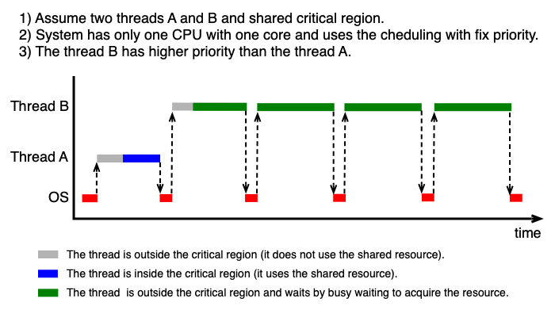
U zkoušky
Umějte popsat inverzní prioritní problém: jaké podmínky jsou nutné a proč aktivní čekání vede k uváznutí. Tento problém je důvodem, proč se aktivní čekání nepoužívá v obecných aplikacích, ale jen v jádru OS nebo na krátkých kritických sekcích.
Blokující systémová volání¶
Blokující přístup je z hlediska efektivity lepší pro delší doby čekání. Místo aby vlákno točilo smyčku, systém přepne jeho stav na „Blocked" a procesor je přidělen jinému vláknu. Mechanismus si pamatuje stav kritické sekce a udržuje seznam čekajících vláken.
- Při vstupu do zamčené sekce: vlákno zavolá funkci, která ho zablokuje — přejde do stavu „Blocked" a přestane mu být přidělován procesor. Pasivně čeká.
- Při vstupu do odemčené sekce: funkce pouze si zapamatuje zamčení a vlákno vstoupí.
- Po opuštění sekce: vlákno probudí jedno čekající vlákno (nebo si zapamatuje, že je sekce volná).
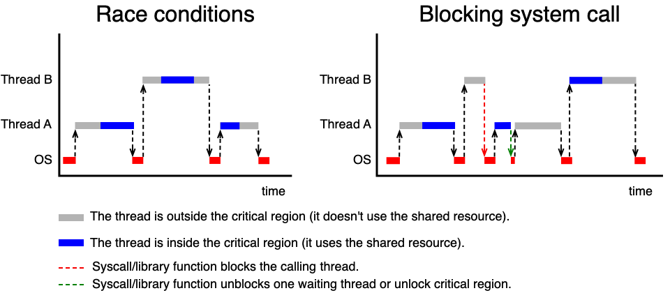
Zámky — Mutexy¶
Mutex (MUTual EXclusion lock) je nejzákladnější blokující synchronizační primitiv. Pamatuje si svůj stav (zamčený/odemčený) a množinu blokovaných vláken. Nad mutexem jsou definovány atomické operace:
mutex_lock(mutex_t *mutex)— pokud je mutex odemčený, zamkne ho. Pokud je zamčený, zablokuje volající vlákno.mutex_unlock(mutex_t *mutex)— pokud čekají vlákna, jedno z nich probudí; jinak odemkne mutex.
mutex_t mtx;
void thread_A(void) {
while (TRUE) {
mutex_lock(&mtx); /* vstup do kritické sekce */
critical_region_A();
mutex_unlock(&mtx); /* opuštění kritické sekce */
}
}
Příklady API:
| API | Typy a funkce |
|---|---|
| POSIX | pthread_mutex_t, pthread_mutex_lock(), pthread_mutex_trylock(), pthread_mutex_unlock() |
| C++ | std::mutex, std::lock_guard, std::unique_lock |
Výhody: Čekání nepředstavuje žádnou CPU zátěž.
Nevýhody: Blokování a odblokování vyžaduje změnu stavu vlákna v jádře OS — to je dražší operace než TSL.
Kdy zvolit aktivní čekání vs. mutex?
Aktivní čekání se vyplatí jen tehdy, kdy se očekává velmi krátká doba čekání (mikrosekund) a víceprocesorový systém. Pro delší čekání vždy použijte blokující mutex — ušetříte CPU.
Synchronizační problém: Producent-konzument¶
Producent-konzument (producer-consumer) je klasická synchronizační úloha modelující výměnu dat přes sdílenou paměť (frontu) s omezenou velikostí N. Producent vkládá data do fronty, konzument je vybírá.
Tři problémy, které musíme vyřešit:
- Výlučný přístup při vkládání a vybírání (fronta je sdílený prostředek).
- Pokud je fronta prázdná, musíme zablokovat konzumenta.
- Pokud je fronta plná, musíme zablokovat producenta.
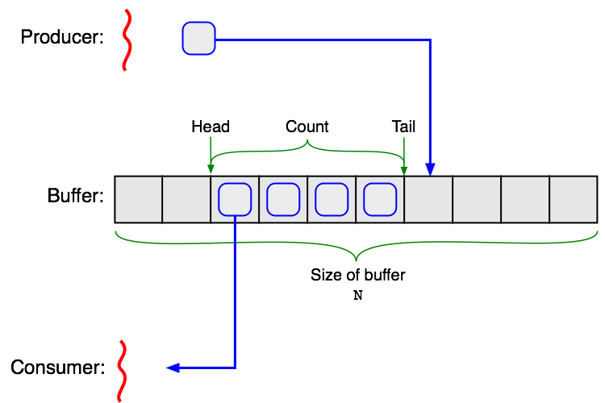
Proč nestačí prosté wait() a signal()¶
Uvažme hypotetické funkce wait() (zablokuj vlákno) a signal(thread) (probuď vlákno). Naivní implementace vypadá:
void producer(void) {
item_t item;
while (TRUE) {
item = produce_item();
if (count == N) wait(); /* fronta plná, usni */
insert_item(item);
count = count + 1;
if (count == 1) signal(&consumer_thread); /* probuď konzumenta */
}
}
void consumer(void) {
item_t item;
while (TRUE) {
if (count == 0) wait(); /* fronta prázdná, usni */
remove_item(&item);
count = count - 1;
if (count == N - 1) signal(&producer_thread); /* probuď producenta */
consume_item(&item);
}
}
Toto řešení je chybné. Přemýšlejme: fronta je prázdná (count == 0), konzument právě otestoval podmínku a chystá se zavolat wait(), ale ještě to nestihl — přepneme kontext na producenta. Ten vloží prvek, zvýší count na 1 a zavolá signal() — jenže konzument ještě nespí, takže signál se ztratí. Poté konzument zavolá wait() a zasekne se navždy, ačkoli fronta není prázdná.
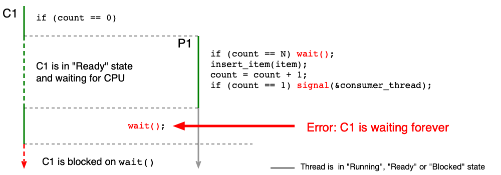
Podmíněné proměnné¶
Podmíněná proměnná (condition variable) řeší výše popsaný problém tím, že operace „odemkni mutex a usni" je atomická — nelze ji přerušit přepínačem kontextu.
Klíčové operace:
cond_wait(cond_t *var, mutex_t *mutex)— volá se se zamčeným mutexem. Atomicky odemkne mutex a zablokuje vlákno. Po probuzení je mutex opět zamčen.cond_signal(cond_t *var)— odblokuje aspoň jedno ze zablokovaných vláken.
#define N 100
int count = 0;
mutex_t mtx;
cond_t cv_empty, cv_full;
void producer(void) {
item_t item;
while (TRUE) {
item = produce_item();
mutex_lock(&mtx);
while (count == N) cond_wait(&cv_full, &mtx); /* fronta plná */
insert_item(item);
count = count + 1;
cond_signal(&cv_empty); /* probuď konzumenta */
mutex_unlock(&mtx);
}
}
void consumer(void) {
item_t item;
while (TRUE) {
mutex_lock(&mtx);
while (count == 0) cond_wait(&cv_empty, &mtx); /* fronta prázdná */
remove_item(&item);
count = count - 1;
cond_signal(&cv_full); /* probuď producenta */
mutex_unlock(&mtx);
consume_item(&item);
}
}
U zkoušky — proč while místo if?
Podmínka před cond_wait musí být while smyčka, ne if. Důvody jsou dva:
- Více producentů/konzumentů: když se probudí více vláken najednou (např. po
cond_broadcast), podmínka může být splněna jen pro jedno z nich. Ostatní se musí vrátit a znovu čekat. - Falešné probuzení (spurious wakeup): POSIX Threads a WinAPI dovolují, aby se vlákno probudilo, aniž by jiné vlákno zavolalo
cond_signal(). Po probuzení vlákno znovu zkontroluje podmínku vewhilesmyčce.
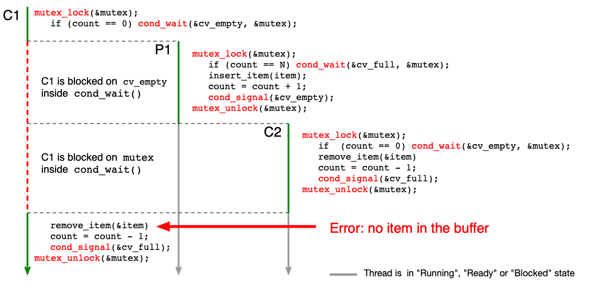
Příklady API pro podmíněné proměnné:
| API | Typy a funkce |
|---|---|
| POSIX | pthread_cond_t, pthread_cond_wait(), pthread_cond_signal(), pthread_cond_broadcast() |
| C++ | std::condition_variable |
Semafory¶
Semafor je zobecnění mutexu — obsahuje celočíselný čítač a frontu čekajících vláken. Zatímco mutex je binární (zamčeno/odemčeno), semafor může nabývat libovolných nezáporných hodnot.
Atomické operace nad semaforem sem:
sem_init(sem_t *sem, unsigned value)— nastaví čítač navaluea vyprázdní frontu.sem_wait(sem_t *sem)— pokud je čítač > 0, sníží ho o 1. Jinak zablokuje volající vlákno.sem_post(sem_t *sem)— pokud čekají vlákna, jedno probudí. Jinak zvýší čítač o 1.
U zkoušky — semafor jako mutex
Binární semafor inicializovaný na 1 se chová jako mutex. sem_wait odpovídá mutex_lock, sem_post odpovídá mutex_unlock. Semafor je ale obecnější — lze ho použít i pro signalizaci (inicializace na 0).
Kritická sekce pomocí semaforu:
sem_t bin_sem;
sem_init(&bin_sem, 1); /* inicializace na 1 = odemčeno */
void Thread_A(void) {
while (TRUE) {
sem_wait(&bin_sem); /* vstup — zamkni */
critical_region_A();
sem_post(&bin_sem); /* opuštění — odemkni */
}
}
Producent-konzument pomocí semaforů: Používáme tři synchronizační objekty:
mutex— chrání výlučný přístup k frontě.empty— semafor počítající volná místa ve frontě (inicializován na N).full— semafor počítající zaplněná místa (inicializován na 0).
#define N 100
mutex_t mtx;
sem_t empty, full;
sem_init(&empty, N); /* N volných míst */
sem_init(&full, 0); /* 0 plných míst */
void producer(void) {
item_t item;
while (TRUE) {
item = produce_item();
sem_wait(&empty); /* čekej na volné místo */
mutex_lock(&mtx);
enter_item(item);
mutex_unlock(&mtx);
sem_post(&full); /* oznam nový prvek */
}
}
void consumer(void) {
item_t item;
while (TRUE) {
sem_wait(&full); /* čekej na prvek */
mutex_lock(&mtx);
remove_item(&item);
mutex_unlock(&mtx);
sem_post(&empty); /* oznam volné místo */
consume_item(&item);
}
}
Pořadí sem_wait — důležitý detail
Producent volá sem_wait(&empty) před mutex_lock. Kdybychom pořadí otočili (nejdřív mutex_lock, pak sem_wait), mohlo by dojít k deadlocku: producent drží mutex a čeká na empty, zatímco konzument čeká na mutex, aby mohl sem_post(&empty).
Příklady API pro semafory:
| API | Funkce |
|---|---|
| Unix System V | semget(), semctl(), semop() |
| POSIX | sem_t, sem_init(), sem_wait(), sem_post() |
| C++ | Semafory nejsou standardně implementovány |
Synchronizační problém: Iterační výpočty a bariéry¶
Při iteračních výpočtech (například výpočet n-té mocniny matice pomocí více vláken) je nutné zajistit, aby všechna vlákna dokončila i-tou iteraci dříve, než kterékoli z nich začne iteraci (i+1). K tomu slouží bariéra (barrier).
Bariéra obsahuje: - čítač definující sílu bariéry — počet vláken, která musí bariéru „navštívit", - frontu vláken čekajících na uvolnění.
Atomické operace:
barrier_init(barrier_t *bar, int value)— nastaví čítač navalue.barrier_wait(barrier_t *bar)— sníží čítač o 1 a zablokuje vlákno. Pokud je čítač nulový (poslední vlákno), probudí všechna čekající vlákna a reset čítač.
#define M 4 /* počet vláken */
#define N 10 /* počet iterací */
barrier_t bar;
barrier_init(&bar, M);
void thread_function(void) {
int i;
for (i = 0; i < N; i++) {
iteration(i);
barrier_wait(&bar); /* počkej na ostatní vlákna */
}
}
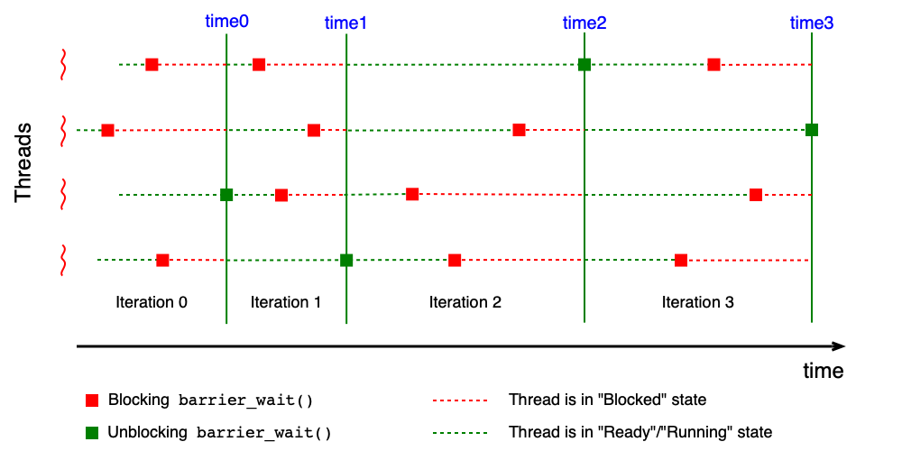
Příklady API pro bariéry:
| API | Typy a funkce |
|---|---|
| POSIX | barrier_t, pthread_barrier_init(), pthread_barrier_wait() |
| C++ | std::experimental::barrier |
Klasické synchronizační úlohy¶
Klasické synchronizační úlohy slouží jako modelové příklady pro ověření správnosti synchronizačních mechanismů. Každá úloha reprezentuje určitý typ soupeření o prostředky. Správné řešení musí být bez race conditions, deadlocku a livelocku. Optimální řešení maximalizuje paralelismus. Spravedlivé řešení zabraňuje hladovění.
Večeřící filosofové¶
Definice problému¶
Večeřící filosofové (Dining Philosophers) modelují situaci, kdy několik vláken soutěží o omezený počet prostředků, přičemž každé vlákno potřebuje více prostředků najednou.
Scénář: N filosofů sedí kolem kulatého stolu. Mezi každými dvěma sousedními talíři leží jedna vidlička — celkem N vidliček pro N filosofů. Hladový filosof potřebuje obě vidličky (vlevo i vpravo), aby mohl jíst. Filosof se nachází v jednom ze tří stavů:
- přemýšlí — nepotřebuje žádné prostředky,
- má hlad — snaží se získat obě vidličky,
- jí — drží obě vidličky a používá je.
Cíle:
- Správné řešení: bez race conditions, deadlocku, livelocku a hladovění.
- Optimální řešení: současně může jíst až floor(N/2) filosofů.
Naivní řešení a jeho problémy¶
#define N 5
#define LEFT (i % N)
#define RIGHT ((i+1) % N)
void philosopher(int i) {
while (TRUE) {
think();
take_fork(LEFT); /* vezmi levou vidličku */
take_fork(RIGHT); /* vezmi pravou vidličku */
eat();
put_fork(LEFT);
put_fork(RIGHT);
}
}
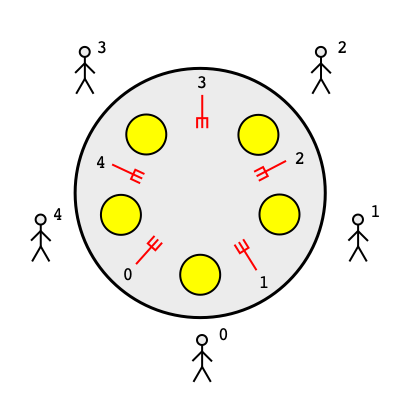
Toto naivní řešení selže při deadlocku: pokud všichni filosofové vezmou levou vidličku současně, budou všichni čekat na pravou vidličku — ta ale leží vlevo od souseda, který ji také drží.
Možné „vylepšení" — filosof vrátí levou vidličku, pokud pravá není k dispozici, a zkusí to znovu. Toto ale vede k livelocku: je možné (byť nepravděpodobné), že všichni filosofové budou synchronně brát a vracet levou vidličku donekonečna.
U zkoušky
Umějte vysvětlit, proč naivní řešení vede k deadlocku a proč vylepšení s vracením vidličky vede k livelocku. Jsou to učebnicové příklady obou jevů.
Správné řešení pomocí mutexu¶
Jednoduché správné řešení: celý stůl s vidličkami považujeme za kritickou sekci chráněnou jedním mutexem.
mutex_t mutex;
void philosopher(int i) {
while (TRUE) {
think();
mutex_lock(&mutex);
take_fork(LEFT);
take_fork(RIGHT);
eat();
put_fork(LEFT);
put_fork(RIGHT);
mutex_unlock(&mutex);
}
}
Toto řešení je správné (bez race conditions a deadlocku), ale není optimální — v každém okamžiku může jíst nejvýše jeden filosof, i když by mohli jíst dva sousedé, kteří nesdílejí vidličku.
Správné optimální řešení pomocí mutexu a N semaforů¶
Optimální řešení vyžaduje jemnější synchronizaci. Každý filosof má vlastní semafor s[i] a sdílené pole stavů state[N].
#define N 5
#define LEFT ((i-1+N) % N)
#define RIGHT ((i+1) % N)
typedef enum {thinking, hungry, eating} state_t;
state_t state[N];
mutex_t mutex;
sem_t s[N];
/* inicializace */
for (i = 0; i < N; i++) { state[i] = thinking; sem_init(&s[i], 0); }
void philosopher(int i) {
while (TRUE) {
think();
take_forks(i);
eat();
put_forks(i);
}
}
void take_forks(int i) {
mutex_lock(&mutex);
state[i] = hungry;
test(i); /* zkus jíst */
mutex_unlock(&mutex);
sem_wait(&s[i]); /* čekej, pokud nejde jíst */
}
void put_forks(int i) {
mutex_lock(&mutex);
state[i] = thinking;
test(LEFT); /* možná teď může jíst levý soused */
test(RIGHT); /* možná teď může jíst pravý soused */
mutex_unlock(&mutex);
}
void test(int i) {
if (state[i] == hungry &&
state[LEFT] != eating &&
state[RIGHT] != eating)
{
state[i] = eating;
sem_post(&s[i]); /* filosof i může jíst */
}
}
Jak to funguje: Filosof, který chce jíst, nastaví svůj stav na hungry a zavolá test(). Funkce test() zkontroluje, zda oba sousedé nejedí — pokud ne, nastaví stav na eating a zavolá sem_post, čímž filosofa „probudí" (nebo ho hned pustí do sekce eat()). Po jídle filosof zavolá put_forks(), kde zkontroluje, zda nyní mohou jíst jeho sousedé — pokud ano, probudí je.
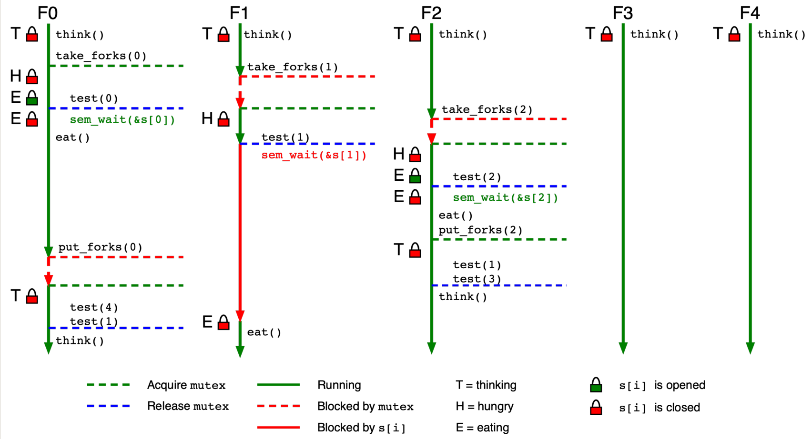
Správné optimální řešení pomocí mutexu a N podmíněných proměnných¶
Alternativní implementace používá pro každého filosofa podmíněnou proměnnou cv[i] a pole stavů vidliček fork[N].
#define N 5
#define LEFT (i % N)
#define RIGHT ((i+1) % N)
typedef enum {available, used} state_t;
state_t fork[N];
mutex_t mutex;
cond_t cv[N];
void take_forks(int i) {
mutex_lock(&mutex);
while (!forks_available(i))
cond_wait(&cv[i], &mutex); /* čekej na obě vidličky */
fork[LEFT] = used;
fork[RIGHT] = used;
mutex_unlock(&mutex);
}
void put_forks(int i) {
mutex_lock(&mutex);
fork[LEFT] = available;
fork[RIGHT] = available;
cond_signal(&cv[LEFT]); /* probuď levého souseda */
cond_signal(&cv[RIGHT]); /* probuď pravého souseda */
mutex_unlock(&mutex);
}
bool forks_available(int i) {
return (fork[LEFT] == available && fork[RIGHT] == available);
}
Obě řešení (semaforové i s podmíněnými proměnnými) jsou správná a optimální.
Čtenáři-písaři¶
Definice problému¶
Čtenáři-písaři (Readers-Writers) modelují situaci, kdy různé typy vláken mají různé požadavky na přístup ke sdílenému prostředku (např. databázi):
- Čtenáři (readers) — přistupují ke sdílenému prostředku pouze pro čtení. Více čtenářů může číst současně, pokud nepíše žádný písař.
- Písaři (writers) — modifikují obsah sdíleného prostředku. Pouze jeden písař může zapisovat v jeden okamžik a žádný jiný vlákno (ani čtenář) nesmí přistupovat k prostředku zároveň.
Cíle: - Správné řešení: bez race conditions a deadlocku. - Optimální řešení: více čtenářů čte současně (pokud nepíše písař). - Spravedlivé řešení: žádné vlákno není předbíháno — čtenáři ani písaři nemohou „přeskočit" čekající vlákno.
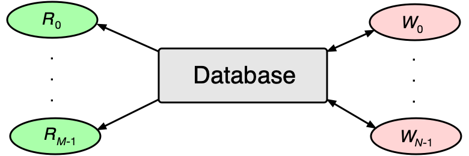
Správné (ale neoptimální) řešení¶
Nejjednodušší řešení — jeden mutex chrání celý sdílený prostředek:
mutex_t mutex;
void reader(void) {
while (TRUE) {
mutex_lock(&mutex);
read_data();
mutex_unlock(&mutex);
use_data();
}
}
void writer(void) {
while (TRUE) {
prepare_data();
mutex_lock(&mutex);
write_data();
mutex_unlock(&mutex);
}
}
Toto řešení je správné, ale neoptimální — pouze jeden čtenář čte v daný moment, přestože více čtenářů by mohlo číst bezpečně paralelně.
Řešení s hladověním písařů¶
Optimální přístup umožňuje souběžné čtení více čtenářů. Používáme dvě synchronizační proměnné:
mutex_rc— chrání čítač čtenářůrc.mutex_db— zamyká přístup k databázi (může ho zamknout pouze první čtenář, odemkne poslední).
int rc = 0; /* počet aktivních čtenářů */
mutex_t mutex_rc; /* chrání čítač rc */
mutex_t mutex_db; /* chrání přístup k databázi */
void reader(void) {
while (TRUE) {
mutex_lock(&mutex_rc);
rc = rc + 1;
if (rc == 1) mutex_lock(&mutex_db); /* první čtenář zamkne DB */
mutex_unlock(&mutex_rc);
read_data();
mutex_lock(&mutex_rc);
rc = rc - 1;
if (rc == 0) mutex_unlock(&mutex_db); /* poslední čtenář odemkne DB */
mutex_unlock(&mutex_rc);
use_data();
}
}
void writer(void) {
while (TRUE) {
prepare_data();
mutex_lock(&mutex_db);
write_data();
mutex_unlock(&mutex_db);
}
}
Toto řešení je správné a optimální (více čtenářů čte zároveň), ale není spravedlivé — pokud čtenáři přicházejí nepřetržitě, písař nikdy nezíská přístup k databázi (hladovění písařů).
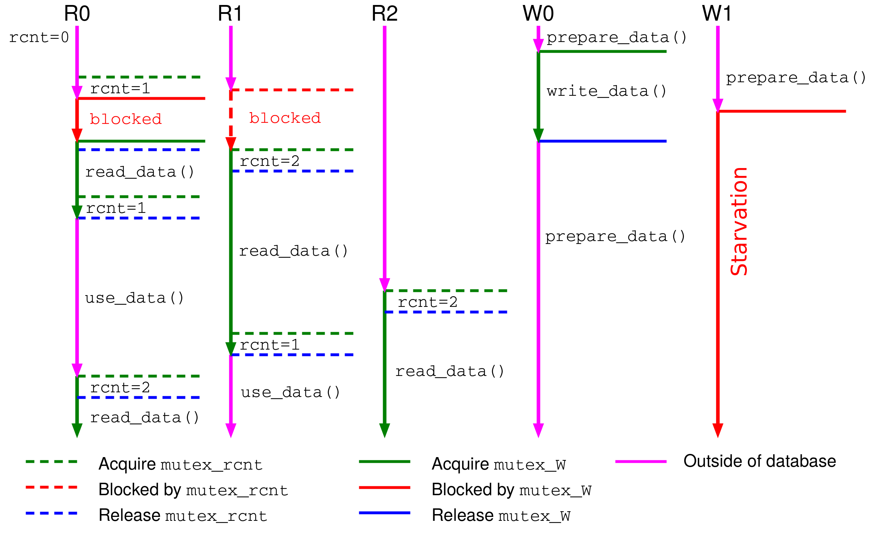
Optimální spravedlivé řešení¶
Spravedlnost vyžaduje, aby vlákna přistupovala k prostředku v pořadí, v jakém začala čekat. Protože většina API (POSIX Threads, WinAPI) negarantuje FIFO pořadí probouzení čekajících vláken, musíme si toto pořadí udržovat sami.
Řešení udržuje frontu čekajících vláken jako zřetězený seznam položek item_t:
typedef enum { writer, reader } type_t;
typedef struct {
item_t *next;
type_t type;
int counter;
cond_t cv;
} item_t;
mutex_t mutex;
int rc, wc, wrc, wwc; /* počty čtoucích, zapisujících, čekajících čtenářů/písařů */
item_t *first, *last;
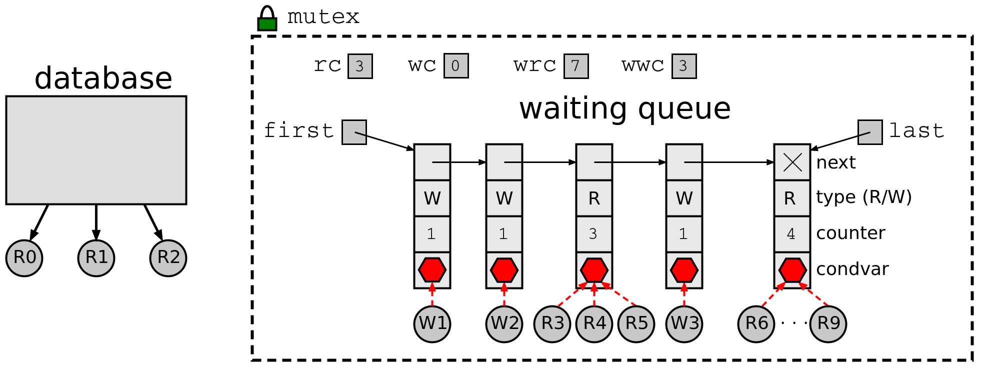
Klíčové pomocné funkce:
update_last_item()— čtenář se přidá k poslední skupině čtenářů ve frontě (nebo vytvoří novou položku). Písař vždy vytváří novou položku.update_first_item()— sníží čítač první položky; pokud je nulový, položku zruší.wakeup_first_item()— probudí všechna vlákna čekající v první položce fronty (pro čtenáře volácond_broadcast, pro písaře stačícond_signal).
void reader(void) {
while (TRUE) {
mutex_lock(&mutex);
if (wc > 0 || wwc > 0) { /* čeká písař => čekej i ty */
wrc = wrc + 1;
item = update_last_item(last, reader);
while (item != first || wc > 0)
cond_wait(&item->cv, &mutex);
wrc = wrc - 1;
update_first_item(first);
}
rc = rc + 1;
mutex_unlock(&mutex);
read_data();
mutex_lock(&mutex);
rc = rc - 1;
if (rc == 0) wakeup_first_item(first); /* probuď písaře */
mutex_unlock(&mutex);
use_data();
}
}
void writer(void) {
while (TRUE) {
prepare_data();
mutex_lock(&mutex);
if (rc > 0 || wc > 0 || wrc > 0 || wwc > 0) { /* kdokoli je tam => čekej */
wwc = wwc + 1;
item = update_last_item(last, writer);
while (item != first || rc > 0 || wc > 0)
cond_wait(&item->cv, &mutex);
wwc = wwc - 1;
update_first_item(first);
}
wc = wc + 1;
mutex_unlock(&mutex);
write_data();
mutex_lock(&mutex);
wc = wc - 1;
wakeup_first_item(first); /* probuď následující čtenáře/písaře */
mutex_unlock(&mutex);
}
}
U zkoušky
Řešení čtenářů-písařů se třemi vlastnostmi (správné, optimální, spravedlivé) je typická zkouškový příklad. Umějte vysvětlit, co každá vlastnost znamená a proč jednoduché řešení s jedním mutexem nesplňuje optimalitu, a proč řešení s dvěma mutexy nesplňuje spravedlnost.
Spící holiči¶
Definice problému¶
Spící holiči (Sleeping Barbers) modelují situaci s N holiči, N holícími křesly a M čekacími místy pro zákazníky.
Pravidla:
- Pokud není žádný zákazník, holič sedí do holícího křesla a usne.
- Přijde-li zákazník:
- Holič spí (je volný) — zákazník ho probudí a nechá se ostříhat.
- Holič je obsazený, ale je volné čekací místo — zákazník počká.
- Čekárna je plná — zákazník odejde.
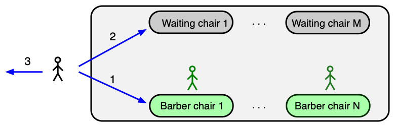
Optimální řešení¶
Řešení používá jeden mutex a dva semafory:
customers— semafor signalizující přítomnost zákazníků čekajících na obsloužení (inicializován na 0).barbers— semafor signalizující volné holiče (inicializován na 0).wc— počítadlo zákazníků čekajících v čekárně (chráněno mutexem).
#define M 5 /* počet čekacích míst */
int wc = 0; /* zákazníci v čekárně */
mutex_t mutex;
sem_t customers, barbers;
sem_init(&customers, 0);
sem_init(&barbers, 0);
void customer(void) {
mutex_lock(&mutex);
if (wc < M) {
wc = wc + 1;
sem_post(&customers); /* oznam holiči, že čekáš */
mutex_unlock(&mutex);
sem_wait(&barbers); /* čekej na volného holiče */
have_haircut();
} else {
mutex_unlock(&mutex); /* čekárna plná, odejdi */
}
}
void barber(void) {
while (TRUE) {
sem_wait(&customers); /* čekej na zákazníka */
mutex_lock(&mutex);
wc = wc - 1;
sem_post(&barbers); /* oznam zákazníkovi, že jsi volný */
mutex_unlock(&mutex);
perform_haircut();
}
}
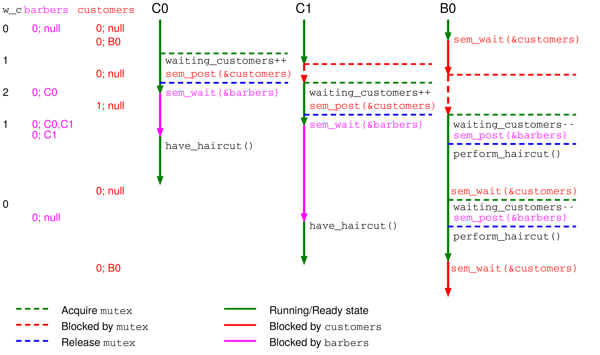
Vlastnosti řešení¶
Toto řešení je optimální — pracuje maximum holičů, pokud je dostatek zákazníků. Nicméně není spravedlivé: holiči probouzejí zákazníky v libovolném pořadí, ne nutně v pořadí příchodu. Zákazníci se tedy mohou předbíhat a na některé se nemusí dostat — hladovění (starvation).
Problém by bylo možné vyřešit FIFO frontou čekajících zákazníků — podobně jako u spravedlivého řešení čtenářů-písařů.
Shrnutí¶
- Bez synchronizace hrozí race conditions (nedeterministické výsledky při sdíleném přístupu k datům).
- Se synchronizací hrozí deadlock (vzájemné čekání), livelock (neproduktivní aktivita) a starvation (dlouhodobé nepřidělení prostředků).
- Aktivní čekání (busy waiting) pomocí instrukce TSL je správné na úrovni hardware, ale plýtvá CPU a může vést k inverznímu prioritnímu problému.
- Mutex (blokující zámek) je základní primitiv pro vzájemné vyloučení — čekání nespotřebovává CPU.
- Podmíněná proměnná umožňuje atomicky odemknout mutex a zablokovat vlákno; podmínka musí být testována ve
whilesmyčce kvůli spurious wakeup a souběžným probuzením. - Semafor je zobecnění mutexu s celočíselným čítačem; binární semafor (hodnota 0/1) nahradí mutex, generální semafor slouží k signalizaci a počítání prostředků.
- Bariéra synchronizuje iterační výpočty: všechna vlákna musí dokončit iteraci i před tím, než pokračují na iteraci i+1.
- Večeřící filosofové: naivní řešení vede k deadlocku; vylepšení s vracením vidliček k livelocku; správné optimální řešení vyžaduje mutex + N semaforů (nebo podmíněných proměnných) a funkci
test(). - Čtenáři-písaři: více čtenářů může číst paralelně, pokud nepíše žádný písař; dosažení spravedlnosti (bez hladovění) vyžaduje explicitní FIFO frontu čekajících vláken.
- Spící holiči: řešení pomocí mutexu a dvou semaforů je optimální (pracují všichni volní holiči), ale nespravedlivé (zákazníci se mohou předbíhat).
Klíčové pojmy¶
- Race condition (časově závislá chyba) — nedeterministická chyba způsobená nekontrolovaným souběžným přístupem více vláken ke sdíleným datům.
- Deadlock (uváznutí) — situace, kdy skupina vláken čeká na události, které může vyvolat pouze jedno z čekajících vláken; systém se zasekne.
- Livelock — situace, kdy vlákna aktivně mění svůj stav, ale žádné z nich nedokončí výpočet; na rozdíl od deadlocku jsou vlákna spuštěná.
- Starvation (hladovění) — vlákno je ve stavu Ready, ale je opakovaně předbíháno a nedostane se k prostředkům po dlouhou dobu.
- Kritická sekce (critical section/region) — část kódu, kde vlákno přistupuje ke sdílenému prostředku; v jednom okamžiku smí být v kritické sekci nejvýše jedno vlákno.
- Aktivní čekání (busy waiting, spinning) — vlákno ve smyčce opakovaně testuje podmínku vstupu do kritické sekce a přitom spotřebovává 100 % jednoho jádra CPU.
- Instrukce TSL (Test-and-Set-Lock) — atomická hardwarová instrukce, která načte hodnotu z paměti a nastaví ji na nenulovou hodnotu v jedné nedělitelné operaci; základ správné implementace aktivního čekání.
- Atomická operace — operace, která se z pohledu ostatních vláken jeví jako nedělitelná; nelze ji přerušit přepínačem kontextu ani jiným vláknem.
- Inverzní prioritní problém (priority inversion) — uváznutí způsobené aktivním čekáním: vlákno s vysokou prioritou čeká na vlákno s nízkou prioritou, které ale nemůže pokračovat, protože je vytlačeno z procesoru právě vysokoprioritním vláknem.
- Mutex (MUTual EXclusion lock, vzájemné vyloučení) — blokující synchronizační primitiv; vlákno čekající na zamčený mutex je přepnuto do stavu Blocked a nespotřebovává CPU.
mutex_lock— zamkne mutex nebo zablokuje volající vlákno, pokud je mutex zamčen.mutex_unlock— odemkne mutex nebo probudí jedno čekající vlákno.- Podmíněná proměnná (condition variable) — synchronizační primitiv umožňující vláknu atomicky odemknout mutex a zablokovat se; probuzení nastane po zavolání
cond_signalnebocond_broadcast. cond_wait(var, mutex)— atomicky odemkne mutex a zablokuje vlákno; po probuzení mutex opět zamkne.cond_signal(var)— probudí aspoň jedno vlákno čekající na podmíněné proměnné.- Spurious wakeup (falešné probuzení) — vlákno čekající na podmíněné proměnné se může probudit bez zavolání
cond_signal; proto musí být podmínka testována vewhilesmyčce. - Semafor — synchronizační primitiv s celočíselným čítačem;
sem_waitsníží čítač nebo zablokuje vlákno,sem_postzvýší čítač nebo probudí čekající vlákno. - Binární semafor — semafor inicializovaný na 1, který se chová jako mutex; hodnoty nabývá pouze 0 a 1.
- Generální (počítací) semafor — semafor s čítačem > 1, vhodný pro počítání dostupných instancí prostředku nebo signalizaci.
- Bariéra (barrier) — synchronizační primitiv pro iterační výpočty; vlákna čekají, dokud požadovaný počet vláken nezavolá
barrier_wait, poté jsou všechna uvolněna. - Producent-konzument (producer-consumer) — klasická synchronizační úloha: producent vkládá data do sdílené fronty, konzument je odebírá; nutná synchronizace výlučného přístupu a signalizace plné/prázdné fronty.
- Večeřící filosofové (Dining Philosophers) — klasická synchronizační úloha modelující soupeření N vláken o N sdílených prostředků (vidliček), kde každé vlákno potřebuje dva sousední prostředky; optimální řešení dovoluje
floor(N/2)vláken pracovat paralelně. - Čtenáři-písaři (Readers-Writers) — klasická synchronizační úloha: více čtenářů může číst paralelně, ale písař potřebuje výlučný přístup; spravedlivé řešení vyžaduje FIFO frontu čekajících vláken.
- Hladovění písařů — situace v úloze čtenářů-písařů, kdy nepřetržitý proud čtenářů trvale blokuje přístup písařů k sdílenému prostředku.
- Spící holiči (Sleeping Barbers) — klasická synchronizační úloha: holič čeká na zákazníka (sem_wait), zákazník čeká na holiče (sem_wait); zákazník odejde, pokud je čekárna plná; řešení je optimální, ale bez FIFO nespravedlivé.
- POSIX Threads (pthreads) — standardní API pro práci s vlákny v Unixových systémech; poskytuje
pthread_mutex_t,pthread_cond_t,sem_t,barrier_t. - Funkce test() (ve filosofech) — pomocná funkce kontrolující, zda filosof může jíst (oba sousedé nejedí a filosof má hlad); pokud ano, nastaví stav na
eatinga zavolásem_postna filosofův semafor. - Spravedlivé řešení — synchronizační schéma, ve kterém žádné vlákno není předbíháno; čekající vlákna jsou obsloužena v pořadí, v jakém začala čekat (FIFO).
- Optimální řešení — synchronizační schéma maximalizující paralelismus; co nejvíce vláken pracuje souběžně, pokud to korektnost dovoluje.